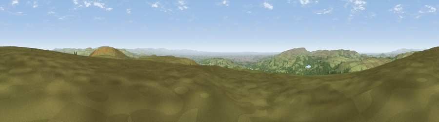

Viewpoint near Edgworth
#7092 in England · top 9% of its area beats it · near Edgworth · open accessWhere it is
The exact computed spot (SD 75512 18625). Click the marker for map links.
Public access: this spot lies on mapped open-access land (CRoW Act 2000) — you may roam here on foot. Computed from Natural England's CRoW access layer and OpenStreetMap rights of way — not the legal definitive map. Always verify locally.
The view, rendered

A 360° render of this exact spot computed from the terrain model, tree cover and land cover — summer colours, afternoon light, calibrated against photographs of famous viewpoints. Real trees, hedges and buildings will differ in detail.
The panorama
Grey silhouette: terrain skyline in each direction (720 bearings, Earth curvature and refraction included). Dashed green: skyline with trees (+15 m) and buildings (+8 m) as obstacles. Blue strip: how far the ground is visible on each bearing.
Where the view opens
Wedge length = distance to the farthest visible ground on that bearing (vegetation-aware). Rings at 10, 25 and 50 km.
What fills the view
66% grassland · 23% woodland · 8% built-up · 1% water · 1% cropland
Angular shares of the visible panorama (visual magnitude), not map area. Landscape diversity 0.40 (0–1 Shannon).
Key numbers
More beautiful places nearby
The staircase of upgrades: each row has a higher view potential than everything closer. Driving times are estimates from straight-line distance, calibrated against real road routing — check an actual route before setting out.
| Place | Direction | Drive | Score |
|---|---|---|---|
| Viewpoint near Holcombe | SE · 2 km | ~6 min | 70.0 |
| Viewpoint near Hazelhurst | SE · 3 km | ~8 min | 75.1 |
| Viewpoint near Edenfield | E · 7 km | ~14 min | 77.5 |
| Darwen Hill | WNW · 8 km | ~16 min | 80.7 |
| White Brow | SW · 11 km | ~21 min | 82.9 |
| Warton Crag | NNW · 60 km | ~83 min | 83.2 |
| Viewpoint near Grange-over-Sands | NNW · 70 km | ~93 min | 83.4 |
| Viewpoint near Cartmel | NNW · 72 km | ~96 min | 87.0 |
53.66353, -2.37206 · source: screening · position refined by local search. Computed location — check access rights before visiting.